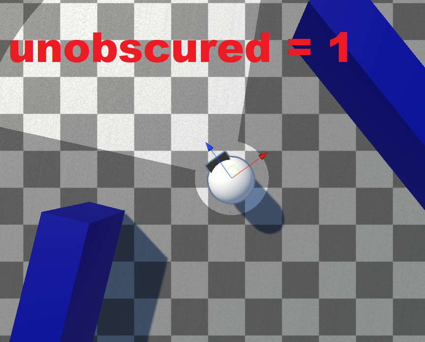
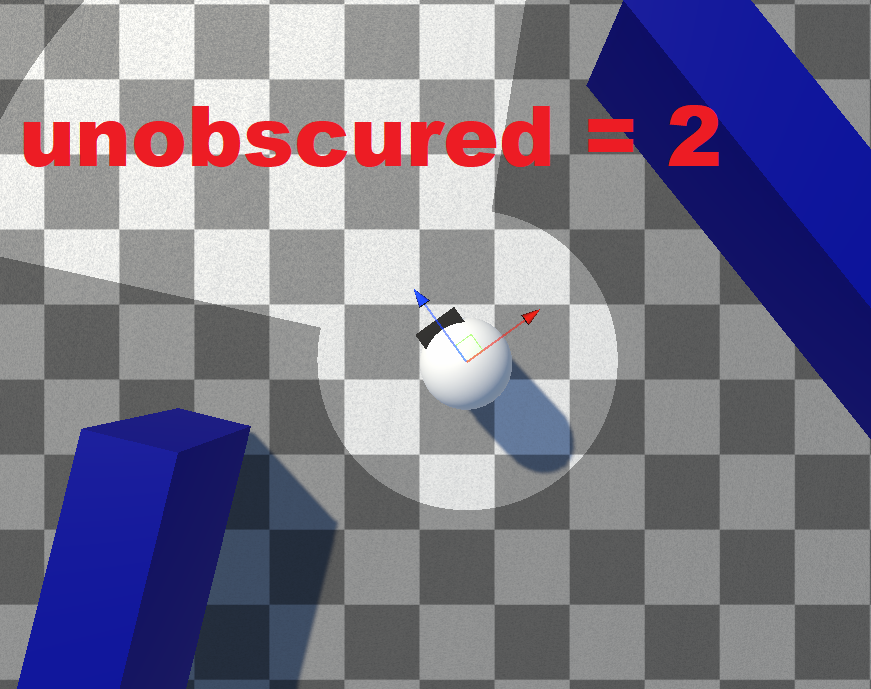
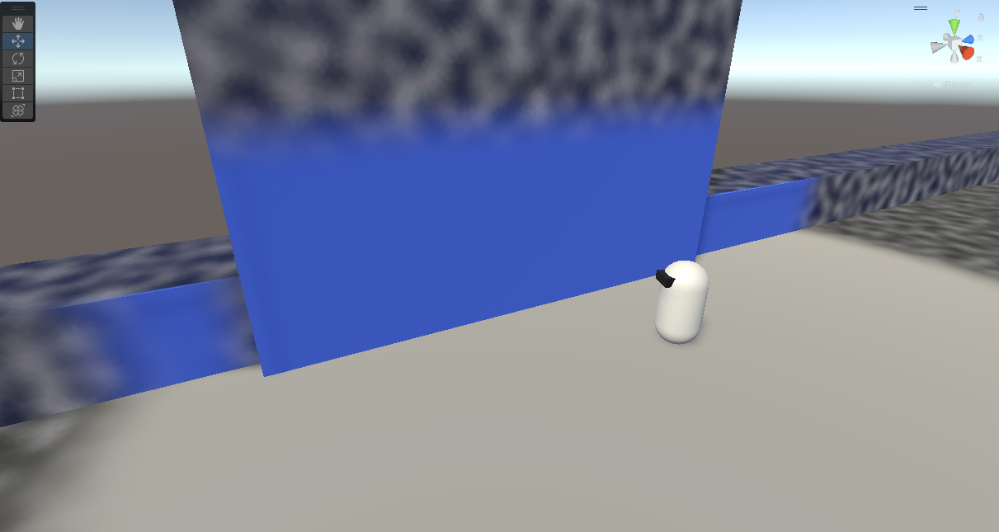
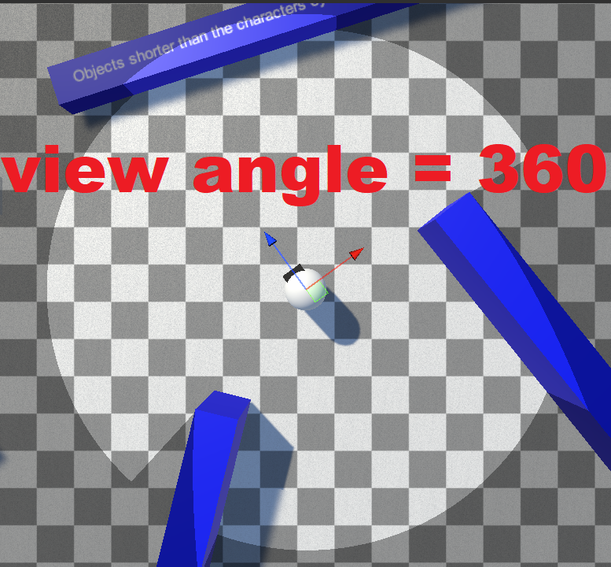
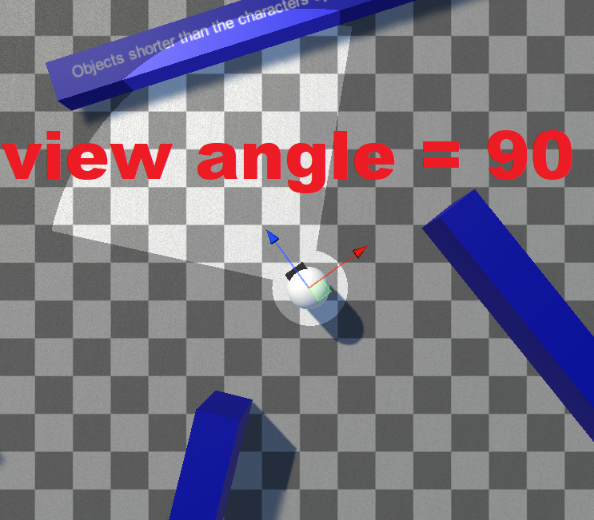
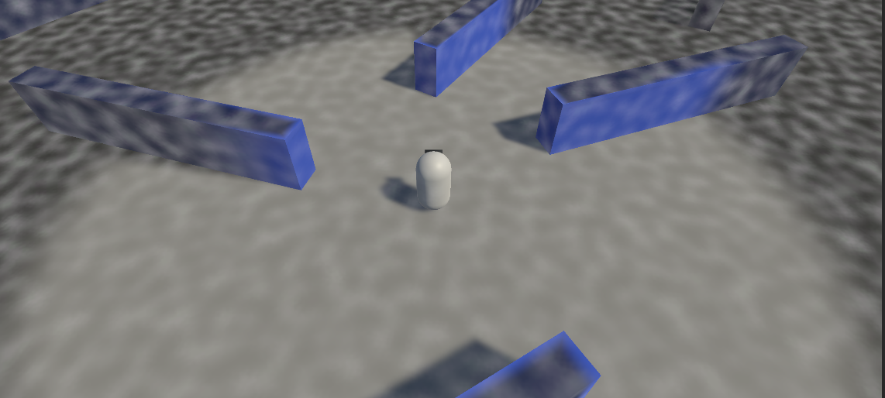
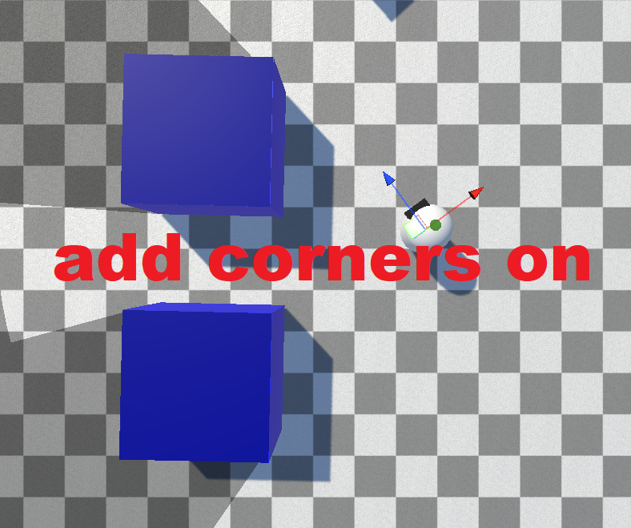
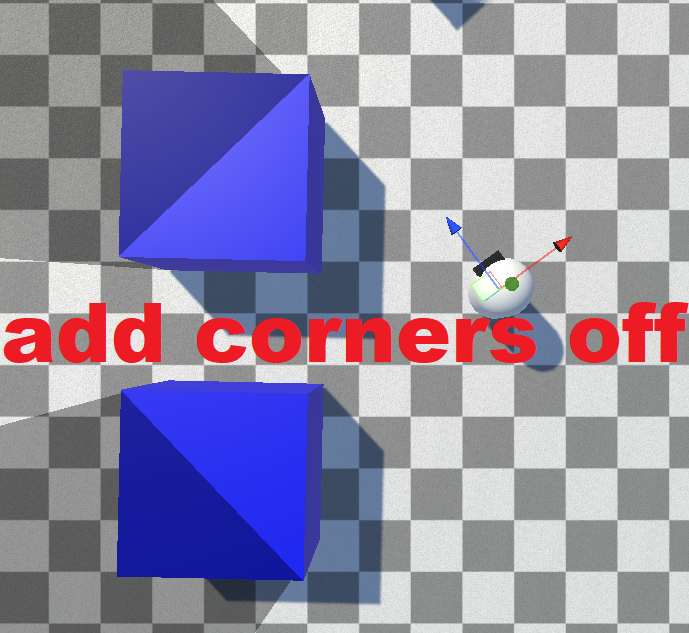

Revealers
Every setting on the Fog Of War Revealer 3D / Fog Of War Revealer 2D components, grouped by inspector section. For how to add a revealer, see Getting Started: Revealers.
Vision Range Settings
| Property | Type | Default | Description |
|---|---|---|---|
| View Radius | float | 15 | How far the revealer can see. |
| Soften Distance | float | 3 | Softens the outer edge of the view radius (soft fog). |
| Inner Soften Angle | float (0–60) | 5 | Softens the inner edge of the view cone. |
| Unobscured Radius | float | 1 | A radius that is always lit, even outside the view angle or behind obstacles. |
| Unobscured Soften Distance | float | 0.25 | Softens the edge of the unobscured radius. |
| Vision Height | float | 3 | How high the revealer can see (3D). |
| Vision Height Soften Distance | float | 1.5 | Softens the top edge of the vision height. |
The Unobscured Radius is always lit, even behind obstacles:



Vision HeightCustomization Settings
| Property | Type | Default | Description |
|---|---|---|---|
| View Angle | float (1–360) | 360 | The cone angle the revealer sees within. |
| Opacity | float (0–1) | 1 | How strongly this revealer clears the fog. |
| Eye Offset | float | 0 | Height above the object that sight is calculated from. |
| Shader Eye Offset | float | 0 | A shader-only offset for the height at which vision height is evaluated. |
| Start Revealer As Static | bool | false | Spawns the revealer as static (calculates once, then stops). |
View Angle sets the width of the vision cone:



Revealer opacity = 0.5Hider Settings
| Property | Type | Default | Description |
|---|---|---|---|
| Reveal Hider In Fade Out Zone Percentage | float (0–1) | 0.5 | How deep into the soften zone a hider must be to count as revealed (e.g. 0.5 = at least 50% opacity). |
| Max Hiders Sampled Per Frame | int | 50 | Maximum hiders this revealer tests per frame. |
| Set Hider Ray Origin To Hiders Height | bool | false | Starts the hider visibility ray at the hider's height. |
| Set Hider Ray Destination To Revealers Height | bool | true | Ends the hider visibility ray at this revealer's height. |
Occlusion Settings
| Property | Type | Default | Description |
|---|---|---|---|
| Use Occlusion | bool | true | Whether obstacles block vision. Disable for very cheap, non-blocking revealers. |
| Add Corners | bool | true | Adds object corners as sight segments. Disabling skips "inside" edges, allowing bleeding between visible corners. |
| Obstacle Mask | LayerMask | — | The collider layers that block vision. |
| Occlusion Quality | enum | High Resolution | Quality preset for raycast accuracy. See Occlusion Quality. |
Add Corners controls whether object corners are added as sight segments — disabling it allows vision to bleed between an object's visible corners:


Setting Occlusion Quality to Custom exposes the underlying raycast tuning fields (Raycast Resolution, Num Extra Iterations, Resolve Edge, and more) — documented in Occlusion Quality.
Scripting
All of these settings are exposed as runtime properties. See the Revealer API.